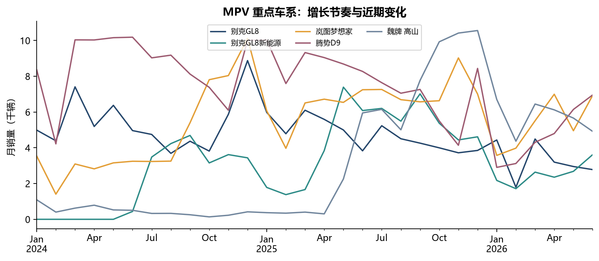

MPV 增长温和，
头部份额下降。
+0.69%
2025 年样本 MPV 销量为 939,247 辆。品牌 CR5 降至 60.52%，较上年下降 3.96 个百分点，需同时跟踪新增长产品与既有头部。
CASE STUDY 01 · 汽车行业
从品牌增长走到产品贡献，再用时间检验增长的持续性。一个基于公开销量与配置数据的汽车市场分析项目。
个人项目 · 公开数据复现与专题分析 · 统计期截至 2026 年 6 月
车系月度销量记录
车系 · 覆盖 162 个品牌
配置记录 · 379 个车系匹配
2022.01 — 2026.06
01 / FINDINGS
2025 全年对比 2024 全年
以下份额均为样本内口径。
2025 年样本 MPV 销量为 939,247 辆。品牌 CR5 降至 60.52%，较上年下降 3.96 个百分点，需同时跟踪新增长产品与既有头部。
GL8 新能源的年度增量高于别克品牌 MPV 净增量 23,348 辆。燃油 GL8 减少 7,835 辆，显示同一品牌内产品走势分化。
梦想家 2025 年同比增长 45.6%，但 2026 年上半年同比下降 13.8%。判断增长需结合季度贡献、增长月份与近期表现。
02 / EXPLORE
切换比较期，查看 MPV 车系的销量变化。
基期为零时不计算同比增长率。
2025 年 vs 2024 年
正在加载样本数据…
下表按销量增量降序排列 · 展示当前筛选的前 10 个车系 · 单位：辆
| 车系 / 品牌 | 本期销量 | 基期销量 | 销量增量 | 同比 |
|---|
03 / CONTINUITY
月度走势帮助区分增长节奏，
不能单凭一段上涨判断稳定性。

预测对照 · 60 个车系 / 360 次单月预测
2026 年上半年滚动预测中，三个月均值的总 WMAPE 更低，但仅在 6 个测试月中的 2 个月胜过上月值。平均更好，不代表每个月都更好。
WMAPE = 绝对误差之和 ÷ 实际销量之和；越低越好。
检查车系 × 月份唯一性、缺失月份、零销量和异常波动；统一名称与日期，建立事实表和车系维表，保留映射审计。
使用 MySQL 聚合、连接与窗口函数计算同比、环比、样本内份额和排名变化；将品牌增量拆解到车系。
依据原始类别字段比较品牌与重点车系；结合 CR3 / CR5、季度增量和月度波动观察竞争变化。
50 项 Python / MySQL 指标对账通过；完成 SQL 空库导入验证，并交付 Notebook、可编辑 Excel 图表和五页报告。
INTERPRETATION
结果仅代表本固定样本。38,693 条零销量记录保留，其中可能存在采集空缺；日历月份齐全不等于原始来源完整。568 条异常候选仅作标记，没有直接删除。
定向核对 5 个车系的 13 条来源记录，全部一致；不是随机抽样，不能外推全量准确率。配置按标准化车系名匹配 379 个销量车系，静态配置不能代表全车系历史销售结构。
基于 Yemyu/china-auto-market-analysis 的公开数据快照，开展销量与配置复现、SQL 指标分析和 MPV 专题。AI 辅助完成的个人分析项目，不代表公司任职、商业项目落地或经营收益。代码包保留来源说明和上游许可。
05 / DELIVERABLES
可以先读报告了解业务判断，再查看看板与实现过程。
在 GitHub 浏览完整项目 ↗